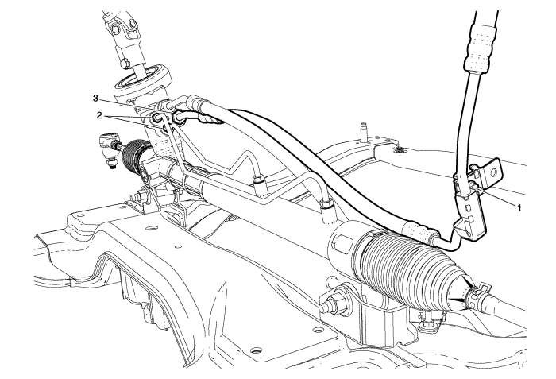
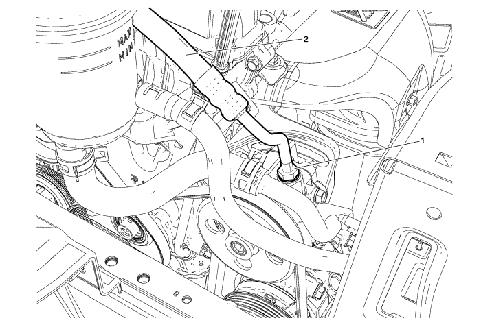

Spark
Sustitución del manguito/tubo de entrada del mecanismo de la dirección asistida.
Procedimiento de desmontaje
Drene la máxima cantidad posible de líquido de dirección asistida del depósito.
Coloque los depósitos de vaciado debajo del vehículo donde sea necesario.

Desmonte el perno de la abrazadera del tubo de entrada del mecanismo de la dirección asistida (1).
Desconecte los herrajes del tubo de alimentación del mecanismo de la dirección asistida (2).
Desconecte los herrajes del tubo de entrada del mecanismo de la dirección asistida (3).

Desconecte el herraje del tubo de salida de la bomba de la dirección asistida (1).
Desmonte el tubo flexible/tubo de entrada del mecanismo de la dirección asistida (2) del vehículo.
Procedimiento de montaje
Monte el tubo flexible/tubo de entrada del mecanismo de la dirección asistida en el vehículo.
Precaución:
Consulte
Precaución con las fijaciones
en la sección Prólogo
Monte el herraje del tubo de entrada del mecanismo de la dirección (3) y apriételos a
28 N·m (21 lib. pie)
.
Monte el herraje del tubo de alimentación del mecanismo de la dirección (2) y apriételos a
13 N·m (10 lib. pie)
.
Monte el perno de apriete del tubo flexible/tubo de entrada del mecanismo de la dirección y apriételo a
9 N·m (80 lib. pulg.)
.
Monte el herraje del tubo de salida de la bomba de la dirección (1) y apriételo a
28 N·m (21 lib. pie)
.
Limpie del vehículo cualquier exceso de líquido de la dirección y desmonte las bandejas de drenaje.
Rellenar y purgar el sistema de la dirección asistida. Consultar
Purga de aire del sistema de dirección asistida
.
© Copyright Chevrolet. Reservados todos los derechos